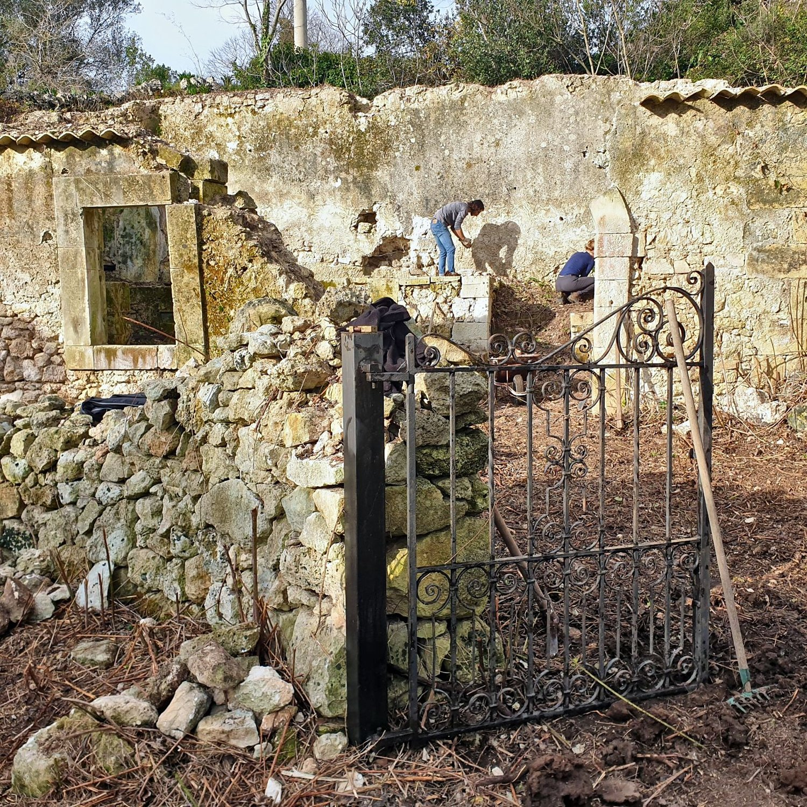
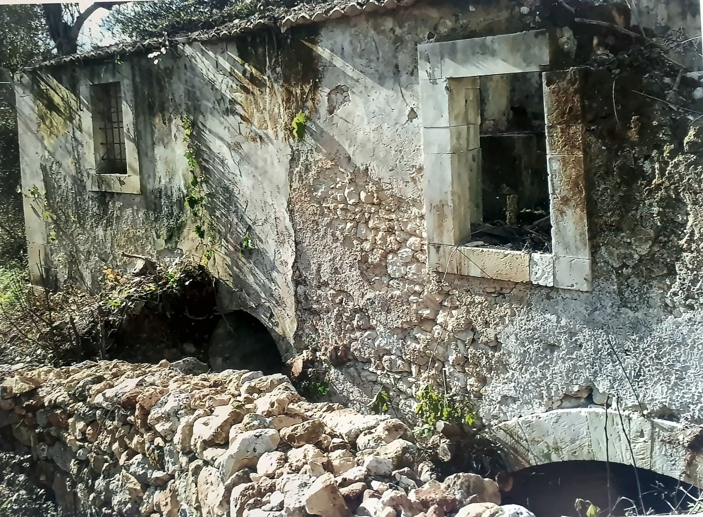
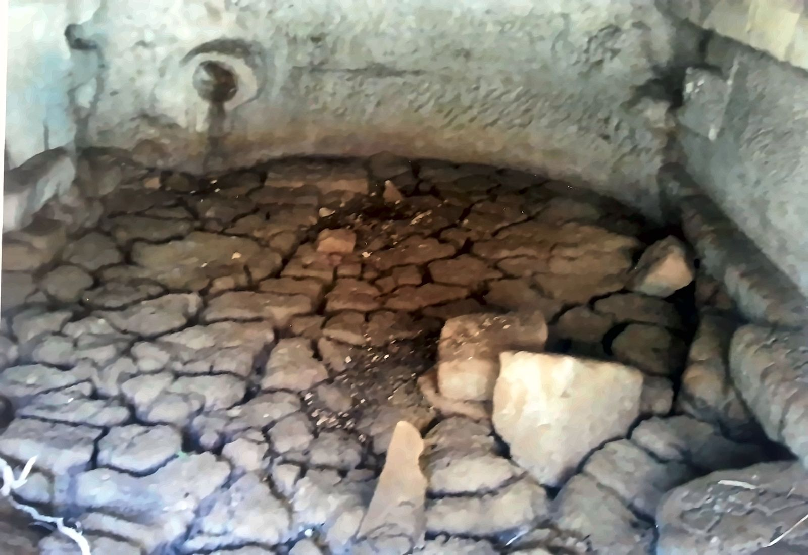
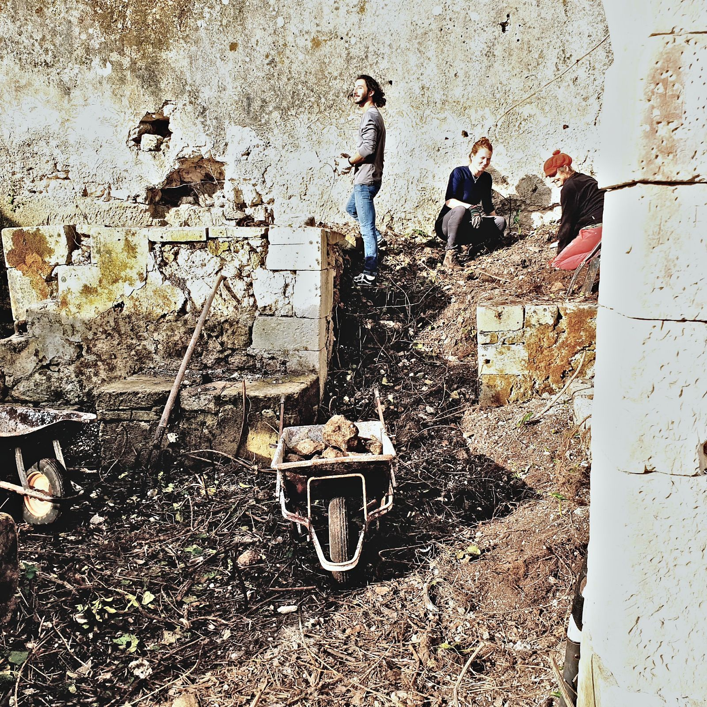
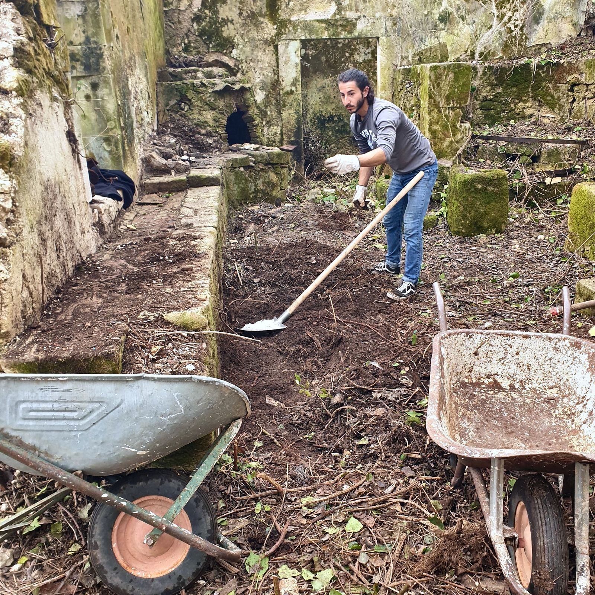
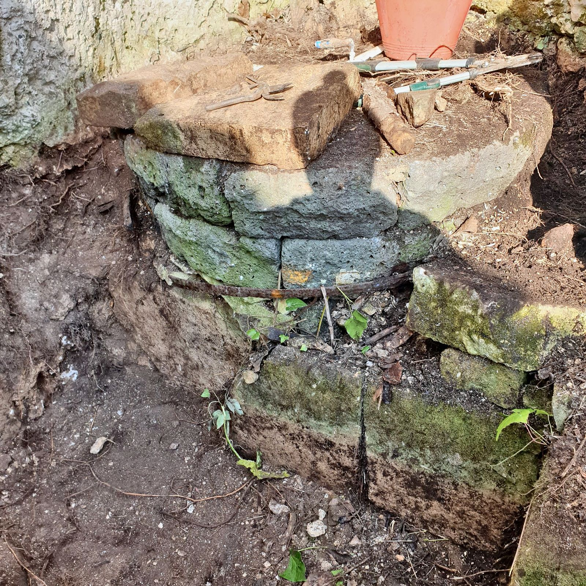
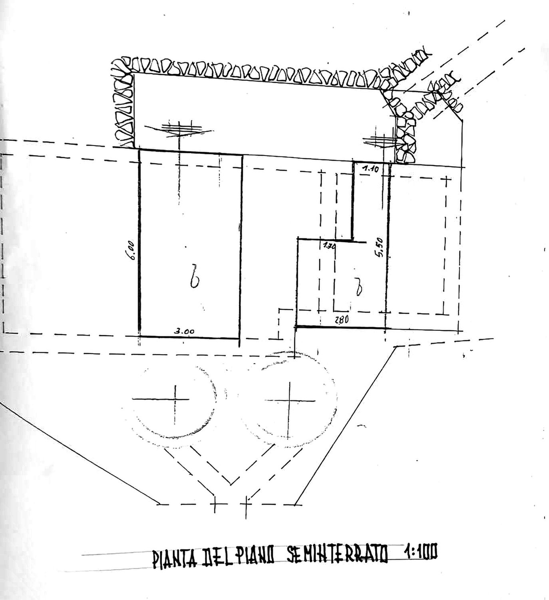
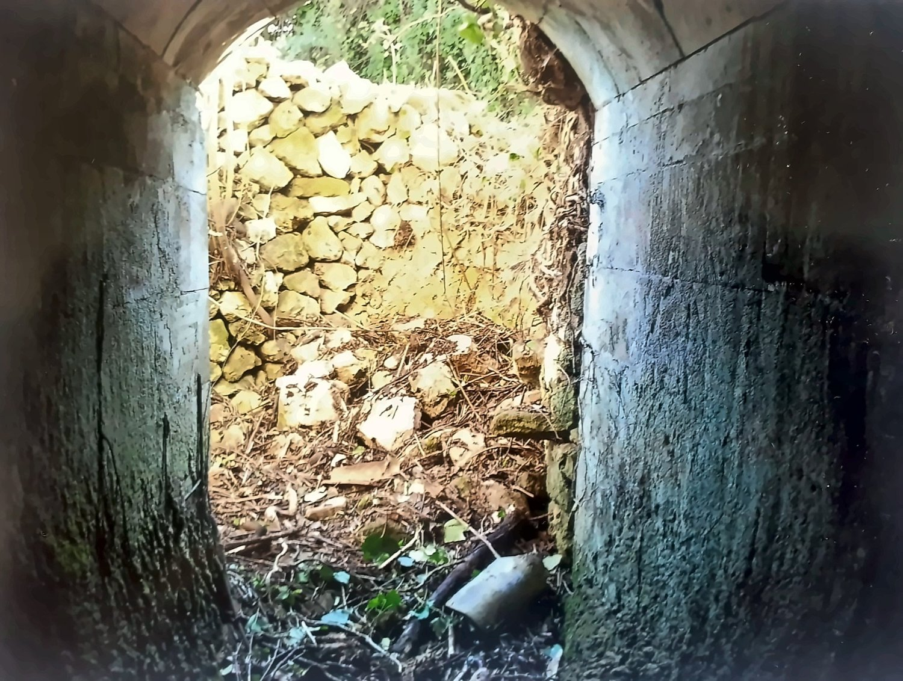

The old stone, brought back to light.
The millstone of the water mill lay under plants and soil. It was uncovered and cleaned by hand. It no longer turns, but it is the oldest working memory of the house.


Found under ivy and earth.
The water mill had disappeared into the hillside. It was drawn, measured and cleared by hand, one wheelbarrow at a time, until the stones came back into the light. The building is from the 1700s, over a system probably laid by the Romans and the Greeks.


A ruin behind an iron gate.
Old photographs show the mill before the work began: the roof half fallen, the windows empty, the walls covered by plants.


Cleared by friends, one wheelbarrow at a time.
No machines entered the courtyard. Soil, roots and stones were carried out by hand, and the ground gave things back: iron hoops, steps, and the base of a millstone.





Measured by hand before a stone was moved.
The survey shows how the mill sits against the rock: the water falls behind the wall, passes under the milling room and leaves through an arch.

